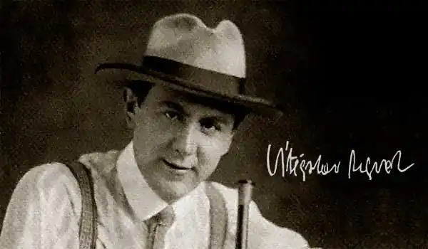

НЕЗВАЛ, Вітезслав (Nezval, Vitezslav — 26.05.1900, с. Біскоупки — 06.04.1958, Прага) — чеський письменник.Незвал традиційно називають творцем нової чеської поезії. Високі набутки його творчого доробку визнаються широким читацьким загалом. Він уважав себе поетом, котрий вчить розуміти буденне в контексті вічності, усвідомлювати своє людське призначення, сприймати себе як частину Всесвіту. Тому у його творах поєднуються історична конкретність і філософський підтекст, реальний світ і багатство фантазії. За словами Незвала він міг "зніматися у небеса на своїх поетичних крилах", але потім знову "повертався на землю", яка давала йому наснагу:
Не знаю, що станеться за півроку,не знаю, що стане до року.Одне тільки знаю: лоза край потокупрекрасна, як празьке бароко.("Не знаю", пер. В. Житника)Народився Незвал у сім'ї сільського вчителя у селі Біскоупки на Чесько-Моравській височині. Майбутній поет пишався тим, що дід по батькові та дядько були кваліфікованими ливарями, а сільський рід матері був у пошанівку в окрузі за чулість і справедливість.
Невелика сім'я Незвал, у якій була ще донька Власта, жила, хоч і скромно, але в достатку. Батько з ранніх років намагався розвинути в дітях допитливість, інтерес до музики, поезії, сам любив книги, збирав бібліотеку. Світ чеської класики оточував хлопця з того моменту, коли він почав вчитися читати. Учнем початкової школи зачитувався книжками із серії "Друг батьківщини". Найбільше йому подобалися "Потоп" і "Хрестоносці" Г. Сенкевича. Близькою була для Незвала і природа. Квітучі сади, косогори і поля села Шаміковіце (сюди сім'я переїхала 1903 р.) назавжди стали для нього синонімом поняття "батьківщина". Сільське дитинство емоційно пов'язало поета з народними звичаями, повір'ями, піснями, з яскравою метушнею сільських свят. У 1911 р. він став учнем гімназії у м. Тршебичі, де познайомився з художнім світом Ф. Достоєвського, Е. Т. А. Гофмана, Е. По, В. Гюго та ін. У гімназії написав цілий зошит віршів, але, на його думку, вони були "банальним шкільним римуванням". Іншою пристрастю Незвала-гімназиста була музика. За власним зізнанням поета, він, найімовірніше, став би композитором і музикантом, якби в Тршебичах можна було продовжувати систематичні заняття музикою. Під час Першої світової війни учень дев'ятого класу гімназії Незвал одягнув мундир австрійського піхотинця. Проте йому поталанило перервати свою воєнну "кар'єру": захворівши і потрапивши у лікарню, він домігся звільнення від військової служби і повернувся у Шаміковіце. Після війни закінчив тршебицьку гімназію і вступив у Брненський університет на юридичний факультет. Провчившись семестр у Брно, перевівся на філософський факультет Кардового університету в Празі, щоби поглибити освіту. У Празі Незвал розширив уявлення про західноєвропейську літературу, ознайомився, зокрема, з "Антологією французької поезії" у перекладі К. Чапека. Навесні 1922 р. вступив у спілку молодих письменників і художників "Деветсил", прихильники якої (К. Тейге, І. Волькер) розробляли програму пролетарського мистецтва. Пізніше естетична програма К. Тейге і Незвала отримала нове оформлення і нову назву — "поетизм", який увійшов в історію літератури як найвпливовіша чеська авангардистська течія XX ст. "Поетизм, — зазначав Незвал у 1928 p., — це спосіб дивитися на світ, щоб він став поетичним". На думку письменника, поетизм став уособленням бажання "організувати реальність так, щоби вона була здатна задовольнити поетичний голод людства, від якого страждає наше століття". Сутність методу полягала у новому розумінні сюжету та композиції у поезії. Замість послідовного розвитку поетичної ідеї або життєвої колізії — вільний розвиток поетичного образу через асоціативне мислення. Реальні враження "трансформуються", між ними встановлюються метафоричні зв'язки. Увесь вірш будується як розгорнута метафора. Крім того, "поетисти" проголосили культ духовного епікурейства, захоплення красою слова, шо здатне змінити світ. Погляди Незвала періоду поетизму викладені в книгах есе "Волькер" ("Wolker", 1925) і "Фальшивий мар'яж" ("Falesny marias", 1925), збірці "Пантоміма" ("Pantomima", 1924), що близька до неокласицистичних збірок М. Рильського. З кінця 20-х pp. поет зацікавився таємницями підсвідомих психічних процесів особистості, "грою почуттів" і "грою сердечних бажань". Він намагається проникнути у глибини людської душі, освітити її "променем інтелекту". Тому невипадково його творчість поступово підпадає під вплив сюрреалізму. Незвал імпонував потяг сюрреалістів до дослідження механізмів творчості, інтуїції, підсвідомості, снів. Однак він завжди наголошував на другій частині терміну "сюрреалізм": у сутінках потойбічного світу шукав ключі для розуміння реальності. "Ніякої надреальності у трансцендентному змісті ми не визнаємо, — писав Незвал. — Наша так звана "надреальність" ("сюр" із французької означає "над") є синтезом реальності. Ми за найправдивіше та найповніше осягання діалектично зрозумілої та сприятливої реальності". На межі 20-30-х рр. поет створив чеський варіант сюрреалізму. Згідно з його концепцією, справжні сутність і прагнення людини, не спотворені впливом суспільства, містяться в емоційній, стихійній, підсвідомій сферах психіки, у поетичній фантазії, дитячому світосприйманні тощо. Тому завдання письменника — розкривати таємниці духовного життя людини, звільняючи її почуття і переводячи їх з потаємного плану у реальний. У березні 1934 p. Незвал заснував у Празі групу сюрреалістів (К. Бібл, І. Штирський, Туайя, К. Тейге), уклав маніфест "Сюрреалізм в ЧСР де підтримав програму французького сюрреалізму. Коло творів сюрреалістичного змісту у Незвала 30-х pp. досить широке: це його прозаїчні книги "Невидима Москва" ("Neviditelna Moskva" 1935), "Вулиця Жиле-Нер" ("Ulice Git-lecoeur 1936), "Празький пішохід" ("Prazsky chodec" 1938); поетичні збірки "Жінка у множині" ("Zeru v mnoznem cisle", 1936), "Абсолютний могильник" ("Absolutni hrobaf", 1937) та ін. Незвал багато перекладав з А. Бретона та П. Елюара, наполегливо пропонував сюрреалістичний тип образності в укладеній антології "Сучасні поетичні напрями", (1937) та ін. У 1938 p. Незвал з політичних міркувань відійшов від сюрреалізму. Роки фашистської окупації Чехословаччини поет переживав разом з: своєю країною. Він не скористався наданою йому можливістю емігрувати. З посиленням режиму окупації його твори перестали друкувати. Вірші, написані у 1941 — 1945 pp., вийшли друком уже після звільнення країни. У роки окупації Незвал уперше у своєму житті звернувся до живопису, виявивши у цій галузі мистецтва неабиякі здібності. У 1944 р. Незвала заарештувало гестапо, але незабаром його відпустили, оскільки не вдалося зібрати компрометуючий матеріал. Яскрава індивідуальність ліричного "я" Н відобразилась у збірках віршів як раннього ( "Міст" — "Most", 1922), так і зрілого ("Прага з пальцями дощу" — "Praha s prsty deute", 1936: "Жінка у множині", 1936 та ін.) періодів творчості. Зокрема, поезії "Осінь", "З казки" є емоційним відгуком, який залишила в душі поета конкретна подія, зазначена лише мимохідь. При всьому заглибленні у свій внутрішній світ Незвал пов'язаний з дійсністю, переповнений нею ("Хоругва", "Тесля", "Утіха", "Пристрасті" та ін.). Але дійсність часто домислюється ним у казково-фантастичному плані. Потік реальних вражень поета проходить через уяву і, нагромаджуючи метафори, створює підтекст. Найяскравіші й радісні кольори з'являються у віршах на сільські теми ("Вечірня", "Весняна" , "Співчуття"). Тут село — не острівець, а земля обітована, де поет відчуває радість буття, рятуючись від неспокійного світу. Як і П. Тичина ("Сонячні кларнети"), Незвал намагався "підсилити" емоційну виразність віршів музикою, шукаючи нові ритми та мелодії, образні й асоціативні ряди: Прощавай Коли ці слова останні свідкиЩастя зостається хоч пам'ятка якаТрошечки облудна мов запах сухозліткиЯк листівка проста мов хусточка легка...Прощавай Коли ми розстатися повинні Що ж тим гірш надії ніщо не оживитьХочемо зустрітись не розлучаймось ниніПрощавай і хусточка Доля так велить( "Прощавай і хусточка" , пер. Г. Кочура)У 1953 p. Незвала нагородили Золотою медаллю Всесвітньої Ради Миру за поему "Пісня світу" ("Zpev miru", 1950). У 1956 p. H. виступив з доповіддю "Про деякі проблеми сучасної поезії" на II з'їзді Спілки чехословацьких письменників, де обґрунтував місце чеської літератури у світовому літературному процесі. Незвал помер б квітня 1958 р. від серцевої недостатності, яку спричинило запалення легенів. Лише за тиждень до того дня поет повернувся з мандрівки по Італії, був сповнений вражень і планів, але нові книги віршів уже залишилися ненаписаними. Українською мовою окремі твори Незвала переклали А. Павлюк, П. Тичина, М. Рильський, М. Бажан, А. Малишко, Г. Кочур, Є. Дроб'язко, В. Житник, П. Перебийніс та ін. За О. Ніколенко